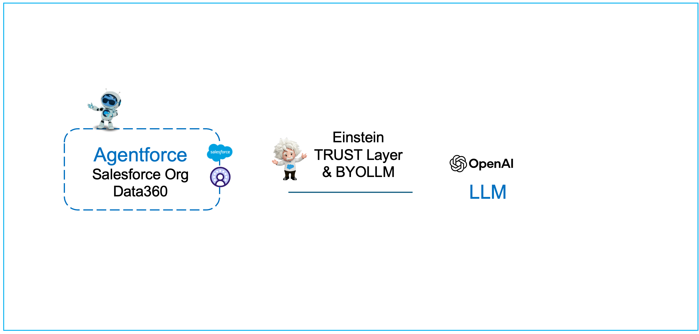

If you are not familiar with Data360 and/or Agentforce360, the following workshop would be the best place to start.
https://developer.salesforce.com/workshops/agentforce-workshop/data-cloud/5-create-unified-profile
Document AI: Structure from Chaos: Your facilitator will prrovide the link for this module.
Data 360 + Agentforce + Google BigQuery: Your facilitator will prrovide the link for this module